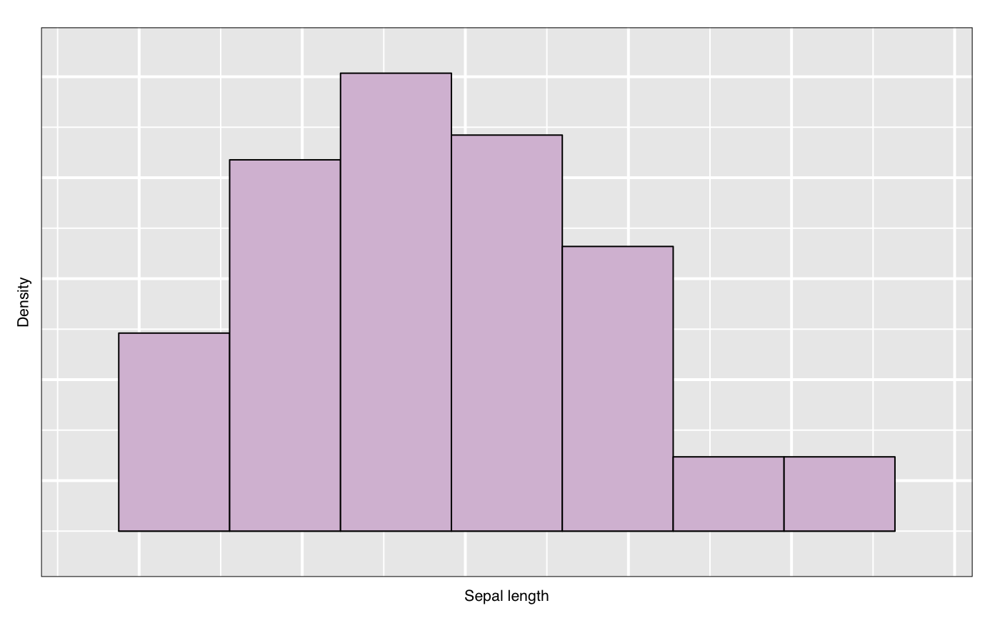

l_hist.Rdl_hist is a generic function for creating an interactive histogram display that can be linked with
loon's other displays
l_hist(x, yshows = c("frequency", "density"), showStackedColors = TRUE, origin = NULL, binwidth = NULL, showBinHandle = FALSE, xlabel = NULL, parent = NULL, ...)
| x | vector with numerical data to perform the binning onx, |
|---|---|
| yshows | one of "frequency" (default) or "density" |
| showStackedColors | if TRUE (default) then bars will be coloured according to colours of the points; if FALSE, then the bars will be a uniform colour except for highlighted points. |
| origin | numeric scalar to define the binning origin |
| binwidth | a numeric scalar to specify the binwidth
If NULL |
| showBinHandle | If |
| xlabel | label to be used on the horizontal axis. If NULL, an attempt at a meaningful label
inferred from |
| parent | parent widget path |
| ... | named arguments to modify the histogram plot states |
widget handle
Note that when changing the yshows state form
'frequency' to 'density' you might have to use
l_scaleto_world to show the complete histogram in the plotting
region.
For more information run: l_help("learn_R_display_hist")
#> [1] "linkingGroup" "linkingKey" "zoomX" #> [4] "zoomY" "panX" "panY" #> [7] "deltaX" "deltaY" "xlabel" #> [10] "ylabel" "title" "showLabels" #> [13] "showScales" "swapAxes" "showGuides" #> [16] "background" "foreground" "guidesBackground" #> [19] "guidelines" "minimumMargins" "labelMargins" #> [22] "scalesMargins" "default_ylabels" "x" #> [25] "binwidth" "origin" "showBinHandle" #> [28] "yshows" "colorStackingOrder" "showOutlines" #> [31] "showStackedColors" "colorFill" "colorOutline" #> [34] "color" "selected" "active" #> [37] "selectBy" "selectionLogic" "useLoonInspector"h["xlabel"] <- "Sepal length" h["showOutlines"] <- FALSE h["yshows"]#> [1] "frequency"h["yshows"] <- "density" l_scaleto_plot(h) h["showStackedColors"] <- TRUE h['color'] <- iris$Species h["showStackedColors"] <- FALSE h["showOutlines"] <- TRUE h["showGuides"] <- TRUE # link another plot with the previous plot h['linkingGroup'] <- "iris_data" h2 <- with(iris, l_hist(Petal.Width, linkingGroup="iris_data", showStackedColors = TRUE)) # Get an R (grid) graphics plot of the current loon plot plot(h)